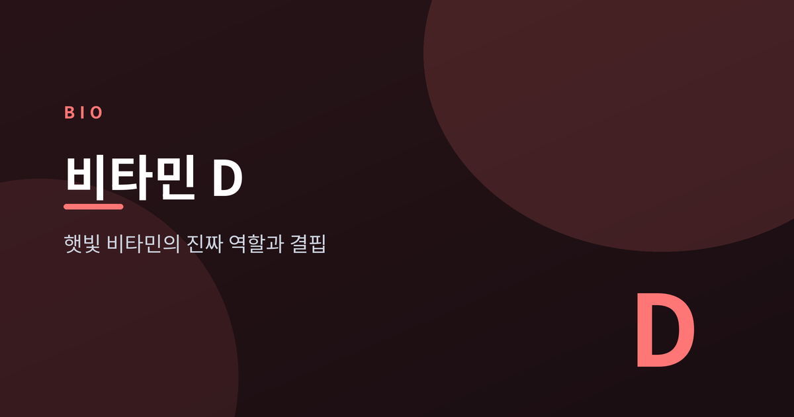
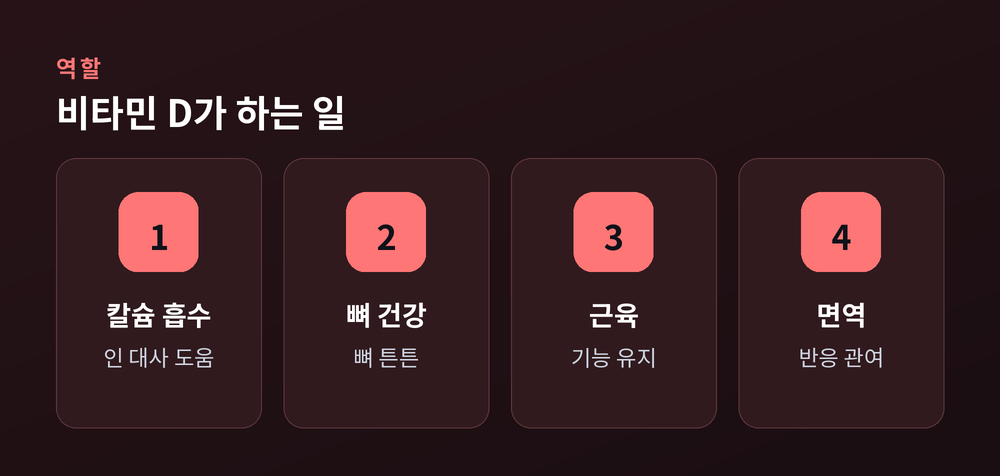
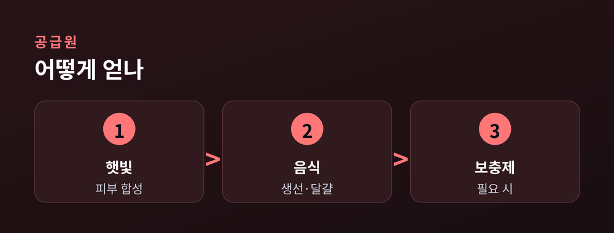
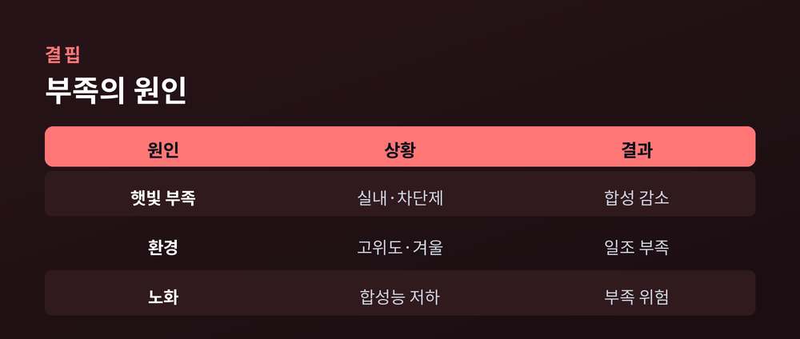

햇빛 비타민의 진짜 역할과 결핍

비타민 D는 흔히 '뼈에 좋은 영양소'로만 알려져 있습니다.
하지만 실제로는 몸에서 호르몬처럼 작용하는 물질입니다.
가장 큰 역할은 칼슘과 인의 흡수와 대사를 돕는 것입니다.
이 덕분에 뼈가 단단하게 유지됩니다.
근육 기능과 면역 반응에도 관여한다고 알려져 있습니다.
즉 뼈 하나만의 문제가 아니라 몸 전반과 얽혀 있습니다.

가장 자연스러운 공급원은 햇빛입니다.
자외선이 피부에 닿으면 비타민 D가 스스로 만들어집니다.
음식으로는 등푸른 생선, 달걀노른자, 강화식품이 도움이 됩니다.
다만 음식만으로 충분히 채우기는 쉽지 않습니다.
부족하기 쉬운 사람은 보충제로 보완하기도 합니다.
자신에게 맞는 방법을 고르는 것이 중요합니다.

현대인은 생각보다 비타민 D가 부족한 경우가 많습니다.
실내 생활, 자외선 차단제 사용, 고위도 거주, 노화가 원인이 됩니다.
부족해도 뚜렷한 증상이 없어 놓치기 쉽습니다.
심하면 뼈가 약해져 골연화증이나 골다공증 위험이 커집니다.
| 원인 | 흔한 상황 |
|---|---|
| 햇빛 부족 | 실내생활·차단제 |
| 환경 | 고위도·겨울 |
| 노화 | 합성능력 저하 |
근육 힘 저하나 잦은 피로도 신호일 수 있습니다.

부족이 의심되면 혈중 25(OH)D 수치 검사로 확인합니다.
낮으면 채우고, 충분하면 굳이 고용량이 필요치 않습니다.
최근 대규모 연구들은 비타민 D가 만병통치는 아니다라고 봅니다.
무분별한 고용량 보충은 오히려 해로울 수 있어 주의해야 합니다.
부족만큼 과잉도 문제입니다. 적당한 햇빛과 식이를 기본으로 하세요.
건강과 관련한 결정은 반드시 의료진과 상의하시기 바랍니다.